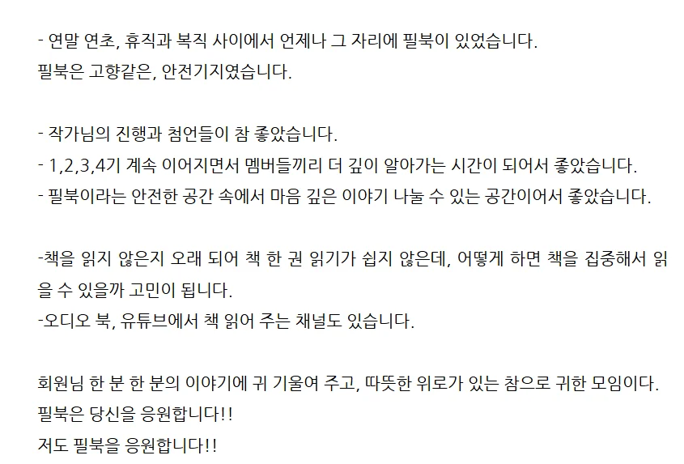
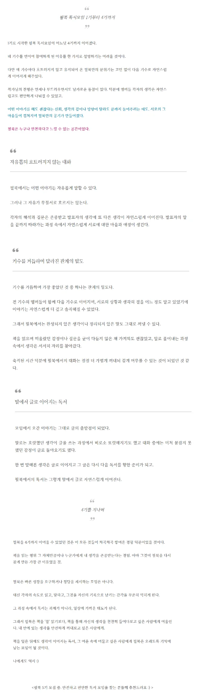

필북 — 박근필의 독서모임
1. 필북 후기 모음
▼필북 참가자들의 생생한 후기
박근필 소장의 동반성장 북클럽 '필북'을 경험한 참가자들의 진솔한 이야기를 들어보세요.
후기 1 (1~30)
▼
역시 한 책을 가지고도 서로 이야기할 부분이 많다. 내가 미처 생각하지 못했던 부분을 다른 사람이 이야기해주는 걸 들으면서 생각하는 관점이 달라진다.
이 책을 읽으면서 동기부여와 위안을 많이 받았다. 내가 공감했던 구절을 소개하고 감상평을 써보려고 한다.
✏️행복한 삶을 원한다면 '3감'을 자주 느끼세요. 감동, 감사, 감탄입니다. 행복한 사람들은 모두 사소한 일에도 감동하고, 일상에서 감사할 것을 찾으며, 작은 것에도 감탄하는 능력이 뛰어납니다. 삶의 의미와 목적을 설정하세요. 의미 있는 일을 하고, 사랑하는 사람과 함께하며, 내일을 기대하는 삶이 중요해요. (p56)
➡️2021년 1월 2일부터 감사일기를 쓰고 있다. 감사일기를 쓰면서 사소한 일에도 감사하게 되고 하루를 돌아보게 된다. 긍정적인 생각을 갖게 되었다. 행복은 주관적이라고 내가 어떻게 생각하느냐에 따라 행복함이 달라질 수 있다. 요즘은 워낙에 사건사고가 많아 무탈하고 평범하게 지내는 일상에 오히려 감사하다. 암에 걸려 항암치료를 받거나 몸이 아파서 병원에 누워계시는 사람들을 보면 우리의 일상은 부러운 존재다. 감사하며 살자.
#박근필의필북참여후기 #필북1주차 #마흔더늦기전에생각의틀을리셋하라

저는 박근필 작가님께 궁금했던 메모와 정리에 대한 인사이트를 얻었습니다.
다른 참가자들도 각자 원하는 답을 얻었을 거라 생각합니다.
누군가는 생각의 확장을 경험한 시간. 궁금한 것을 해결한 시간, 오직 독서 모임만 줄 수 있는 효과가 아닐까요?
덕분에 어젯밤 꿀잠을 잤습니다.
하나의 텍스트를 읽었지만, 수많은 해석을 경험할 수 있는 건, 오직 독서 모임밖에 없습니다.
〈필북〉 독서 모임 참여자들의 다양한 시각이 바로 그 증거입니다.

블로그와 다양한 플랫폼을 통해 나를 브랜딩하고 있는 작가님의 경험과 노하우가 녹여진 강의라 하나하나 실천해볼 부분이 많았는데요.
멈춰져도, 다시 꾸준히 쓰는 것.
다양한 플랫폼을 확장하는 것.
자신을 믿어주는 것.
작가님의 말씀대로, 오래도록 나를 쌓아가는 시간을 갖자 다시 한번 다짐해봅니다.
한분 한분의 나눔과 인사이트를 정리하면서, 각자 나눠주신 부분들을 마음에 담아봅니다.
하나라도 배울 게 있다면 나의 스승이다 라고 말했던 발타자르 그라시안의 말처럼, 열 분의 스승에게 매일같이 배우는 요즘.
하루하루 성장하는 기쁨을 누려봅니다.

아낌없이 나눠주신 우리의 필작가님께 감사 드립니다.

누군가에게는 참 따뜻한 문장이었고
누군가에게는 참 위로가 되는 한마디였음을
그렇게 11개의 생각을 함께 나눌수 있었던 시간
다시 한번 생각할 수 있는
여러 생각들의 나눔에 감사합니다.

첫 파트는 10명 각자가 책을 읽고 마음에 닿았던 부분이나 문장, 그 이유를 함께 나누는 시간이었습니다.
첫 주의 지정 도서는 필북의 리더인 박근필 작가님의 <마흔 더 늦기 전에 생각을 리셋하라> 였는데요.
놓여있는 상황이나 가지고 있는 생각, 문제들이 다 다르기에, 각자가 다 다른 문장을 가지고 왔지만 다른 말하는 이의 이야기는 곧 내 이야기가 되었습니다.
끄덕이고 공감하며, 나눔이 끝나면 또 나의 이야기를 덧붙이기도 하면서.

강의가 시작되면서부터는 아직 잠에 들지 않는 딸아이와 함께 강의를 듣다가 딸아이는 잠이 들었고,
저는, 2시간 동안 온라인이라는 공간에서 만난 우리가 만들어낸 진하고 독특한, 오래 간직하고 싶은 향기의 여운을 가지고 모임을 마무리 했습니다.
'들어오길, 참 잘했다'
나에게 맞는 모임을 찾는 것도 쉽지 않은 일인데, 나의 이야기를 스스럼 없이 할 수 있는 안전한 공간을 선물받은 것 같아 행복해지는 밤이었습니다.
오늘까지도, 그 향의 여운이 가시지 않는.
이렇게 '함께의 향미'를 남긴 나눔과 성장의 시간, 필북 1기 첫 주차 모임 이야기를 마치겠습니다.

작가님의 알맹이 강의를 들으니
2시간이 쏜살같이 지나갔다.
다양한 인사이트를 얻고,
나의 의견을 건네고, 피드백까지 받을 수 있는 독서모임.
늦은밤,
책으로 이야기 나누는 시간이 행복으로 물들었다.
다음주도 책과 사람을 만나
나를 알아가는 시간이 기다려진다.
🐾 필북 1기를 알게되어 감사하다.🐾

윤영님이 아침 일찍 문을 열어주시고
박근필작가님이 화답해 주신다.
그 후 회원분들끼리 생각을 나누고 인사이트를 얻는다.
규모가 큰 모임은 누군가는 묻히고
대화를 안 하는 사람도 있고 다 친해지기는 어렵다.
다들 활발히 대화에 참여하시고, 회원분들이 대체적으로 적극적이시다.
소수 정예라서 그룹과외를 받는 느낌이랄까?
모임 후에는 기록을 해서 꼭 후기를 남겨야 하고 안 그럼 박근필 작가님이
늦게라도 꼭 쓰도록 독려를 하신다. 블로그에 남긴 후기글을 작가님 블로그에 꼭 공유하셔서 다른 분들이 볼 수 있게 하신다. 덕분에 블로그에 오는 손님들도 늘었다.
이것도 동반성장의 하나일 것이다.

배울 것들이 참 많다.

어제의 대화는 어디 가서도 풀어내지 못하는 힘든 이야기들을 술술 풀어냈다.
가족에게도 친한 친구에게 조차도 하지 못했던
진솔한 대화를 나눴다.
필독서 장르에 따라 대화 내용과 밀도가 달라짐을 경험했다.
필작가님의 멋진 리드와
중간중간 멤버들의 추임새가 곁들여진 진솔한 대화의 시간.
뭉클했다.
울컥도 했다.
한분 한분 이야기에 경청했다.
주책스럽게 울 수 없어 최대한 웃으며 밝게 이야기했다.
독서모임이 이럴 수가 있나?
그것도 오프모임도 아닌 한밤중 줌으로 만나는 시간에?
우린 가능했다.
무장해제가 되었다.
마지막 필작가님의 특강도 잊을 수 없다.

서로의 이야기를 듣는 동안, 아마도 '하나가 된' 느낌을 모두가 동일하게 느꼈음이 틀림없다.
화면 속에 나타난 각자의 눈동자에서, 나는 그것을 충분히 느꼈으니까.
그렇게 우리는 어젯밤,
경계를 알 수 없는 갖가지 색깔들이 한데 모여,
회색빛 하늘을 맑게 닦아내듯 나타난 무지개가 되었다.
함께여서, 행복했던 밤 :)

역시 재밌었습니다. 2시간이 순식간에 지나갔어요. 오히려 시간이 모자랄 지경이었죠. 옆에서 와이프가 이제 그만하고 잠자리에 들자고 했지만 그만할 수가 없더라고요. 재밌어서요. 한 마디라도 더 하고 싶어서요. 사람은 자기 이야길 할 때 가장 재밌으니까요. 그래서 독서모임은 항상 시간이 모자랍니다.
유익했고, 개인의 사적 경험을 나눌 만큼 친해진 시간이었습니다.
독서모임은 책 이야기만 하는 곳이 아닙니다. 책 이야기는 10퍼센트 밖에 안 합니다. 90퍼센트는 사람들 자신의 고민과 상담을 나누는 곳입니다.
더 늦기 전에, 시작해 보세요. 여러분이 모르는 세계가 아주 많습니다. 책도 그렇듯요.

박근필 작가님의 브랜딩에 대한 30분 정도의 특강으로 마무리. 다음주와 마지막 주는 자유책에 대하여 이야기를 나누는 시간이다. 무슨 책을 추천할지 고민해봐야지.
#박근필작가와함께하는필북독서모임 #필북2주차

색깔이 다 다르고, 열정이 넘쳐서 우리는 월요병도 부신다.
다음 주에도 필북은 책으로 대동단결, 열정으로 월요병을 불태웁니다.

서로에 대한 믿음과 경청, 수용의 자세에서 시작되었다.
각자 마음으로 길어 올린 문장과 생각들을 나누고,
필북 리더(박근필 작가님)와 멤버들의 피드백은
진심과 공감의 물결로 잔잔하게 마음속을 파고들었다.

나는 나의 사고를 확장중이고, 서로의 다름 속에서
공감과 경청의 자세를 배우고 있다.
나눔의 손길 속에 더욱 끈끈해져가는 필북.
3주차에 다시 만나요.
💗 필북을 만나서 다행이다.💗

하나라도 배울 게 있다면
나의 스승이다
발타자르 그라시안
"
필북 독서모임 3주차를 지나며 이 문구가 더욱 선명하게 와닿습니다.
어떤 자리에서든 배움의 자세를 가지고 있으면, 나를 성장하게 하는 나에게 꼭 필요한 양분들을 얻을 수 있다는 것을 경험해왔는데요.
특히 필북에는 독서, 글쓰기 분야에서 오랜 노하우를 가진 분들이 많다보니 하루하루가 배움의 터입니다.
월요병이라고는 생각도 못하게 하는, 필북 모임이 있는 신나는 월요일.

우연처럼 보이는 강렬한 이끌림을 경험해 보신 적 있으신가요? 머리로 계산도 안되고 또 계산할 수도 없는, 운명적 만남, 운명적 인연 같은 것 말입니다.
저는 살면서 많이 경험해 봤습니다.
그 시작이 되어 준 건, 10년 전 처음 참여한 독서 모임이었답니다. 그래서 여전히 독서 모임에 계속 참여하고 있는 것 같습니다.
이쯤 되면 독서 모임은 우연을 가장한 인연을 만나게 해주는 필연 같은 연결고리가 아닐까요?
마지막으로 독서 모임에는 역효과 하나를 소개하고 마칠까 합니다. 대표적인 역효과는 읽고 싶은 책이 늘어난다는 겁니다.
덕분에 오늘도 책을 3권 주문했습니다. 주문한 책을 읽으면서 4주 차 모임도 기대해 봅니다.

독서와 책에 관해서라면
시간 가는 지도 모르고 나눔을 하는
사람들의 모임이다.
2기,3기.. 많은 사람들이 맛봤으면~

먼저 나오게 되었는데, 작가님 강의는 녹화본으로 공부할게요 :) 오늘도 모두모두 감사합니다

필북과 함께하는 독서모임 마지막주 시간이다.
9월 한달 동안 독서모임 다운 독서모임을 했다는 생각이 들었다. 독서와 글쓰기 그리고 성장에 진심인 필북리더
박근필 작가님을 필두로 멤버분들 또한 독서와 글쓰기에 진심이셔서 많이 배운 한달 이었다.

리더와 멤버들의 피드백은 앞으로 나아갈 방향을 제시해 주었다. 대가없이 정보를 아낌없이 나누는 서로를 만나 감사한 4주였다.
독서 + 강의 + 특강 + 빠른 피드백 + 정보공유
모든게 갖춰진 필북을 만나 행복한 시간이었다.

4주 동안 이어온 짧고도 밀도 높은 여정의 마지막 시간이었지요.
한 달이라는 기간은 짧다면 짧은 시간이었지만, 쌓인 추억과 충만함은 그 시간 이상이었는데요.
첫 만남의 어색함은 어느새 사라지고, 따뜻한 온기가 우리의 시간을 가득 채워주었습니다.
함께 읽고, 함께 쓰며 나눈 시간들이 서로를 조금 더 가까이 이끌어 준 것이겠지요.

책과 글로 이어진 인연은 그 어떤 관계보다도 깊을 수 있다는 것을 몸소 느낄 수 있었던 시간.
누군가의 문장을 내 마음에 울림으로 전해받고, 또 나의 책이 누군가에게 닿아 위로가 되는 경험.
필북이 우리에게 안겨준 가장 큰 선물이 아니었을까 합니다.

좋은 문장을 나누고
생각도 나눴다.
알지 못했던 좋은 책들이 쏟아져 나왔다.
그 속에 담긴 아름다운 문장들
읽은 이의 예리한 통찰
나의 생각이 합해져
멋진 또 다른 책이 만들어진 듯 했다.
책을 좋아하고
글을 쓰는 좋은 분들이 모인
필북 1기 멤버들께 진심으로 감사하다.
당연히 우리 대장님이신 박근필작가님께는
더더더 감사하다.
박근필작가님께서 1기를 만들어 주시고,
공통도서 2권, 개별도서 2권 총4권을
읽게 해주셨다.
책 읽고 나눔 후엔 어김 없이 특강을
열어 주셨다.

서연 이라고 하신다.
이 또한 맞다.
글로 맺어진 인연.
어느새 1기 마지막 수업인게 아쉽다.
2기에서 다시 모이는 분들
부득이하게 2기에 함께하지 못하는 분들이
있다.
나 또한 2기엔 함께하지 못한다.
하는 업무가 가중되어 도저히 여유가 없다.
아주 많이 아쉽다.
하지만
우리의 1기 서연은 영원할 것이다.
박근필작가님의 필북은 영원하리라.
"4주간 함께해주신 서연님들 감사합니다 "

필북 1기가 끝이 났다.
마음 같아서는 2기, 3기 계속 하고 싶다.
일단 2기는 또 신청했다.
소통 하나하나에 대한 피드백,
반응이 참 살갑고 열정이 느껴지는 느낌.
2기에서도 많은 분들이 이 모임에 함께 참여해
좋은 나눔과 아웃풋을 주고 받는 소통의 장이 되었으면 좋겠다.

발견해서 배워서 수료하자! 라는 마음이 컸다.
아, 시작해보니 내가 뭘 대단한 걸 배우려고 애쓰지 않아도 되었다.
박작가님은 그냥 일상적으로 톡방에서 우리에게 해주는
많은 답장과 호응, 리액션 만으로도 인사이트가 넘쳐났다.
그냥 작가님은 인사이트가 워낙 풍성하셨다.
어떤 책을 펼쳐보시거나 그러시지 않으시고 머리 속에 이미 내재화 된 명언과 문장.
그걸로 됐다.

그건 어떻게 보면 꼭 갖춰야 하는 작가의 필요조건이다.
글을 많이 읽는 것도 중요하고 글을 많이 쓰는 것도 중요하다.
하지만 이 글에서 내가 강조하고 싶은 건 따로 있다.
그것 보다 더 중요하다고 생각된다.
그건
바로 위에서 말한
소통력과 환대.
바쁘면 답이 늦을수는 있다.
하지만
조금 늦더라도 누군가의 말에 정성껏 대답해주고
나의 생각을 끼얹어주고
필요하다면 누군가의 의견을 요청해보고
(답이 딱 정해져있는 게 아닌 질문에 대해서는 '이러이러하다!' 단정짓는 것보다는 다른작가님의 의견도 자주 물어보심)
상대방의 의견을 경청하고 반가워해주는 것.
지식 위에 관계가 있다.
관계, 그걸로 됐다.
그게 나중에 작가로서
더 바빠지더라도 놓치지 말아야 하는 게 아닐까?

박작가님이 편하게 리드할 수 있게 은근히 옆에서 내조해주신
정석헌 작가님을 만난 것도 감사.
필북원들 모두 똑같은 하얀 바탕에 똑같이 키보드를 두들기는 액션을 행하지만
적혀나가는 글들은 모두 놀랄만치 개성 있고, 색다르고, 그 만의 분위기가 있다는 게
놀랍다.
필북을 한 달 더 하려 한다.
관심 있으신 분들은 꼭 함께 해서
글을 같이 쓰며 동반성장 하는 10월이 되기를.
후기 2 (31~60)
▼
모임에서 나오는 이야기들은 정답을 찾으려는 게 아니라 각자 다른 삶의 배경에서 나온 시선이잖아요. 그래서 더 재밌어요. 내가 전혀 생각하지 못했던 해석이나 경험이 자연스럽게 책의 문장과 연결되면서, '아, 이렇게도 읽을 수 있구나' 하고 깨닫게 돼요. 그게 결국 내 성찰로 이어지고, 책과 사람 사이에서 더 풍성한 배움이 만들어지는 것 같아요.
'함께 생각하는 연습'
독서모임이 주는 가장 큰 효과는 '함께 생각하는 연습'이 아닐까 싶어요. 책은 매번 새로운 화두를 던져주고, 사람들은 그 화두를 각자의 방식으로 풀어내고, 그 사이에서 나를 돌아볼 기회를 얻는 거죠. 혼자서는 결코 가질 수 없는 성찰의 깊이를, 모임이라는 장을 통해 조금 더 넓혀가는 것. 그래서 나는 이 시간이 단순히 책 읽는 시간이 아니라, 내 삶을 다시 바라보고 정리하는 귀한 순간이라고 생각됩니다.

디지털 교과서보다 종이책을 선호하는 나는 옛날 사람인가보다. (추측 아닌 확신)
그런데 지난 번 필북 2기 OT 때 온라인에서도 이렇게 선한 영향력을 나눌 수 있다는 걸 처음 알게 되었다.


비록 아직 어색하고 낯설어 거의 듣기만 했지만
특히 필북 독서모임을 잘 선택했다는 생각이 들었다.
첫 번째 이유, 부담 없는 온라인 모임
생애 첫 독서모임을 알아봤을 때
제일 걱정했던 것이 시간과 장소였다.
주말이나 평일 저녁은 가족들과 시간을 보내야 하고
모임 장소도 집과 거리가 있어 오랜 시간 들여야 했다.
하지만 필북은 온라인 모임이라 장소 구애받지 않고
불가피하게 참석이 어려워도 녹화본을 공유해 주시니
계속 소속감과 생각의 공유를 할 수 있어 좋았다.

검마사님이 모임에 참석해 주셔서 특강해 주셨다.
책의 저자가 직접 책에 대해 이야기도 나눠주시니
책의 주제가 한 번 더 정리되면서
궁금했던 내용도 물어볼 수 있어 더욱 유익했다.
세 번째 이유, 편안하고 자유로운 분위기
모임의 리더인 박근필 작가님이 중심을 잡아주시면서
편안하고 자유로운 분위기를 이끌어 주셔서
자신의 생각을 이야기하는데 부담을 덜어 주고
같이 함께 모임 하는 분들도 따뜻하고 힘이 되는 말로
서로를 격려하고 독려하는 모습에 힘을 얻었다.

그 삶에 비추어 책을 읽을 때 자신만의 생각과 경험이 묻어난다.
같은 책, 같은 구절을 읽었음에도
서로 다른 생각이 들고, 받아들이는 것이 다르다.
이를 통해 틀림이 아닌 다름으로 나의 시야가 넓어지고
때론 공감으로 위로와 힘을 얻기도 한다.
그래서 독서 모임을 하는 것 같다.
편협할 수 있는 나의 생각과 시야를 넓혀주고
그 과정에서 또한 새로운 것을 발견하고 느낄 수 있어서.
난생처음 시도한 독서모임이
나를 새롭게 자극하는 좋은 도전이 되었다.


젊은 시간이어서 행복했습니다
수고많으셨습니다
믿고듣는 작가님!
그와 함께 걸어가는 분들!
넘 귀하고 아름답습니다
오늘의 후기
완벽하지 않아도 됩니다
삶은 익어가는 거니까
오늘도 행복한 꿈꾸세요
필북 독서 모임 너무 좋네요.
따뜻하고 행복한 시간이었습니다.^^


오늘 모두 너무나 감사합니다^^ 그리웠어요. 이런 시간! :)
마음을 행복으로 가득 채웠네요.
아, 하나만 더어..
아까 화면 속에 한분 한분 눈빛이 정말, 별 같았어요. 반짝
이는 :) 모두 편안한 밤 되세요^^
정말 즐거웠어요~^^
재미, 의미 모두 충전되었네요🎁
모두를 평안한 밤 보내세요. 마음을 나눠주시고 표현해주
셔서 다들 감사합니다.
잘이끌어주시는 덕분입니다🙏

박근필 작가님이 이끄는 필북 2기 독서모임은 나에게 그런 시간을 선물해 주었다.
그동안 몇 번의 오프라인 독서모임에도 참여했지만, 이번엔 유독 마음이 깊이 몰입되었다.
책을 읽고 느낀 점을 정리하며, 다른 사람들과 생각을 나누는 과정이 마치 내 마음을 한층 단단하게 만들어 주는 듯했다.
서로 다른 환경 속에서 살아가는 사람들이 책 한 권을 매개로 소통할 때,
그 안에는 따뜻한 연결과 긍정적인 에너지가 생긴다.
그런 순간들이 쌓여 나의 하루와 마음을 더 건강하게 바꾼다.
이제는 나의 생각을 글로 쓰고 말로 나누는 일이 낯설지 않다.
책으로 성장하는 습관이 내 안에 자연스럽게 자리 잡고 있기 때문이다.
책 한 권을 읽고, 그 안에서 나온 이야기를 서로 나눌 수 있다는 건
요즘 세상에서 정말 감사하고 귀한 축복이다.
오늘도 나는 필북 독서모임 덕분에 조금 더 자라고 있다.

특히 필북 리더님의 깊은 관심이 느껴지는 경청에 놀랐구요. 참여자들의 깊이 있는 인문학과 철학에 대한 감성이 돋보였어요. 전 3기도 이어 신청했는데요.
요즘 세상의 인문학과 작가들의 토론이 궁금하시다면 필북 3기도 추천드려요~
강추합니다!!

너희 묵은 땅을 기경하라
(묵은 땅"이란?
오랫동안 경작되지 않아 단단히 굳은 마음)
호세아 10:12
"
같은 생각, 같은 패턴으로 독서를 할 때랑 달리, 마음결이 곱고, 자신의 삶에 진심이시며, 타인의 삶에도 따스한 눈으로 바라보며 경청하여 주시는 필북 분들과 나눔을 하며 나의 좁디 좁은 세상, 고집스러운 굳은 마음이 깨어지고 넓어지는 새롭고도 신비한 경험을 하였다.
이 모임이 좋아질수록, 독서에 더욱 열심을 낼수록 내 삶이 시시하게 또는 무의미하게 여겨지면 어쩌지? 이미 글도 잘 쓰고 글 fan 들도 많은 다른 사람이 마냥 부러우면 어떡하지? 라는 생각을 하기도 했는데, 기우였다.
오히려, 이 모임이 좋아질수록, 내게 주어진 삶도 꽤 괜찮다는 생각을 하게 되었다.
필북 2기 모든 분들께 진심으로 감사한 마음이다.
내게 사고의 지평을 넓혀 주신 고마운 분들, 덕분입니다.
그분들과 진짜 찐친된 기분이다.
"우리 서로 나눈 그 기쁨은 알 사람이 없도다" 라는 찬양 가사처럼, 이 기쁨은 필북을 통해서만 누릴 수 있는 것이 아닌가 싶다.
앞으로도 필북 2기에서 만난 한 분 한 분의 삶에 날마다, 저마다 모든 면에서의 성장과 충만이 함께 하기를 기도드린다.

각자의 색과 맛을 가진, 서로 다른 17명이 [필북]이라는 하나의 그릇 안에 모였다. 때로는 한 권의 책을 가지고, 때로는 나만의 책을 가지고 각기 재료가 되어서.
혼자 책을 읽다 보면 내 시선과 사유가 미처 닿지 못하는 지대가 생기기 마련이다. 어떤 구절은 그냥 지나가게 되고, 또 어떤 의미는 내 경험의 한계로 미처 발견되지 못하는 경우도 많다.
필북에서는 각자의 이런 빈틈마저도, '어우러짐'의 재료가 되어주었다.
내가 보지 못한 부분, 숨어있는 의미를 다른 멤버의 시선을 통해 보게 되고, 어떤 문장의 깊이는 또 다른 멤버를 통해 조명되고..
각자의 틈새가 다른 이의 생각으로 채워지며 그렇게 책은 입체적으로 완성되어져 갔다.
마치 간이 조금 부족한 나물도 다른 재료에 뒤섞이어 새로운 풍미를 내게 되는 비빔밥처럼, 모자람 없이 모든 것이 어우러져 새로운 깊이를 만들어 주었던 시간.
비빔밥의 맛에 화룡점정을 찍는 것이 참기름이라면, 필북의 '한끗차이 맛'을 만든 것은 리더 박근필 작가님의 리더십이다.
각 멤버의 생각을 부드럽게 다듬으면서, 놓친 의미를 다시 꺼내어 주는 작가님의 리드와 첨언은 모임을 풍성하고 맛깔나게 만들어주는 마법 같은 [한끗]이었다.
리더로서의 통찰, 아마도 이것이 필북에서 늘 오래 여운을 갖게 되는 이유가 아니었을까.
비빔밥 한 그릇처럼.
각 재료가 자신의 결을 잃지 않은 채 조화를 이루는 그 맛처럼.
한 달간, 필북 안에서 책을 통한 나눔과 교감은 오래도록 마음 안에 감칠맛처럼 남을 것 같다.
2기가 끝나고 각자의 길을 가게 되겠지만, 그릇 속에 남은 향처럼 함께 나누었던 이 시간의 온기가 오래도록 서로의 마음에 남길.
함께 어우러짐으로써 깊었고, 또 서로가 다름으로 인해 풍성했던 4주의 시간.
그 시간의 깊은 맛이, 앞으로 멤버분들 각자의 길에서도 은은히 이어지길 바란다.
또 필북 안에서 언젠가 만날 것을 기대하며 :)


회원님들도 책을 좋아하고 글을 쓰는 분들이라서 그런지 낯설지가 않았습니다.
필북 2기를 이끌어 주신 박근필 작가님 수고 많으셨고, 모두 만족하고 유익한 시간 함께해주셔서 감사합니다.
모두 감사합니다
젊은 시간이어서 행복했습니다
수고많으셨습니다
믿고듣는 작가님!
그와 함께 걸어가는 분들!
넘 귀하고 아름답습니다
오늘의 후기
완벽하지 않아도 됩니다
삶은 익어가는 거니까
오늘도 행복한 꿈꾸세요
필북 독서 모임 너무 좋네요.
따뜻하고 행복한 시간이었습니다.^^
좋은시간 만들어주셔서 모두 감사합니다
너무 아쉬웠습니다. 시간이 너무 빨리 가서요.ㅎㅎ
그니까요.
시간이 너무 금방 가는것 같네요
내일도 출근 발걸음이 가벼울것 같습니다ㅎㅎ
독서 목요일이니까요
모두를 감사해요.🙏
@박근필 필 작가님의 진행도 좋고 모두들 너무 진솔하시고 좋은 느낌이네요. 덕분에 좋은 밤 좋은 북토크였어요~
아고 극찬해주셔서 감사합니다.
함께라서 감사합니다. 이끌어주셔서 감사합니다. 작가님.
이렇게 재밌는 독서모임은 처음이예요^^
오늘 모두 너무나 감사합니다^^ 그리웠어요. 이런 시간! :)
마음을 행복으로 가득 채웠네요.
아, 하나만 더어..
아까 화면 속에 한분 한분 눈빛이 정말, 별 같았어요. 반짝이는 :) 모두 편안한 밤 되세요^^
정말 즐거웠어요~^^
재미, 의미 모두 충전되었네요🎁
모두를 평안한 밤 보내세요. 마음을 나눠주시고 표현해주셔서 다들 감사합니다.
잘이끌어주시는 덕분입니다🙏
한스 ★★★★★ 25.10.30
박근필 작가의 동반성장 북클럽 <필북> 3기 모집
[판독불가]
[판독불가]
좋은 독서모임을 이끌어주신 박근필 작가님에게 감사드립니다.
필북에 참여하게 된 것도 25년 나의 인생 중 하나라고 생각합니다.
독서 모임에 참여해 보기 위해 여러 모임을 알아보던 중 필북을 선택한 이유가 있습니다.
1) 온라인 모임
대부분 독서 모임이 오프라인으로 진행되다 보니 장소가 서울 중심에 모여있습니다.
이동하는 시간과 모임 시간까지 합치면 많은 시간이 소요되어 부담이었습니다.
하지만 필북은 온라인 모임이라 시간 걱정 없이 편안하게 시간을 맞출 수 있었고,
늦은 밤 늦은 시간까지 이어져도 집에 들어가야 하는 부담이 없어 마음 편히 참석했습니다.
2) 매주 새로운 강사의 강의
독서 모임 시작 전 강의를 듣습니다. 육아로 인해 평일 저녁과 주말 강연을 찾아가기 어렵습니다.
강의 시간에 [판독불가] 다양한 강의도 듣고 궁금한 점도 직접 물어보고
[판독불가]
3) 녹화본 제공
개인 사유로 참석하지 못하더라도 녹화본을 통해 모임을 느낄 수 있었습니다.
강사님들의 강의뿐만 아니라 독서 모임을 놓치지 않고 나누고 모임의 일원으로 더욱 소속감을 느끼고 다양한 해
과 나눔을 볼 수 있었습니다.
한 번의 경험으로 모든 독서 모임을 다 일일이 얘기할 수는 없겠지만,
제가 경험한 필북 독서 모임은 저의 편견을 깨뜨렸습니다.
리더인 박근필 작가님이 편안한 분위기로 잘 이끌어 주시고, 함께 모든 분들이 서로의 귀를 기울이고
잘 들어주고, 존중해주며, 응원해주고, 토닥여 주는 따듯한 모습이었습니다.
누군가 독서모임에 대해 묻는다면 강력하게 권해보라고 추천할 것입니다.
특히 독서의 재미와 깊이를 더욱 느끼고 싶은 분들에게 독서모임을 추천합니다.
[판독불가]
제가 경험한 독서 모임의 사람들은(특히 필북2기) [판독불가]
모임을 통해서 나의 성장과 성장함을 느끼실 수 있을 것입니다.
저에게 환경이 허락하는 한 최대한 독서 모임을 계속 참여하고 싶습니다.
좋은 모임을 만들고 이끌어 주신 박근필 작가님께 감사를 표하며,
4주 동안 함께 귀한 나눔을 해준 모임원분들께도 감사를 표합니다.
혹시 궁금하시고 함께하고 싶으시다면 필북 3기와 함께해봐요!
필북2기 완료! 수료!
따스한 시간이었어요.
[판독불가]
서연, 글로 이어지는 인연.
[판독불가]
서로의 성장을 진심으로 응원해요♡ 번역하기

앞으로 어떤 더 화려하고 지식 많은 사람들의 독서 모임을 내가 속하게 될 날도 있을 수 있겠다.
하지만 '필북'만의 감동과 분위기는 여기서만 느낄 수 있을 것이고 이와 같은 모임은 없을 것이다.

혼자서 책을 읽으려고 했다면 좋은 글을 옮겨 적는 정도의 인풋 독서에 그쳤을 텐데, 나눔을 위해 한 번도 읽게 되고 정리하게 되고 글로 남기니 독서의 깊이도 더욱 깊어지는 것 같다.
생각의 틀을 리셋 하고 싶다면 이 책을 강력 추천한다. 또한 나의 독서의 깊이를 더하고 생각의 확장을 원한다면 독서모임을 추천하다. 마침 필북3기를 모집한다고 하니 함께해요!


#필북독서모임후기 #필북독서모임2기

동생이 신청하라고 재촉할 때도, "응, 그래, 참 좋은 모임이네.(언젠가 하겠지.)" 라고 대답할 뿐이었다.
보다 못한 동생이 같이 신청해 주었고, 언니 마음 바뀌지 않도록 수강료도 내 주었다. (고마운 시스터)
첫 번째 모임부터 바로 무장해제 되었고, 뭔가 정확히 설명할 수 없지만 내 삶의 터전 안에서는 경험할 수 없었던 시간을 경험하게 되었다.
각자 다른 장소, 다른 삶을 살아오던 사람들이 책과 글을 좋아하는 인연으로 만나게 되었고, 서로의 이야기에 경청하고, 서로에게 용기와 위로가 되어 주는 기적을 경험하고 있다.
내 발표 시간이 되었을 때 사실 화면을 볼 수가 없었다. 떨렸다.
그런데 발표가 끝날 무렵 화면을 봤는데 모두가 나를 진심어린 눈빛으로 바라봐 주고 있는 것이다.

벌써 두 번째 참여하는 필북 독서모임은, 1기 때의 잔향을 품고 더 진한 향기로 나의 마음에 스며들고 있다.
이번 3주 차에는 유난히 화면 속 함께한 분들의 눈빛이 눈에 들어오는 것은 무슨 이유에서였을까.
누군가 발표할 때마다 반짝거리는 눈으로 이야기를 마음에 담는 한 분 한 분의 눈빛.
검은 배경 화면에 나타나는 그것은 꼭 별빛과 같다는 생각을 잠시 했는데, '별이 빛나는 밤에'를 떠올리게 된 이유 중 하나도 바로 그것이 아니었을까 싶다.

필북이라는 시간은 어쩌면, 우리 각자의 삶 속 작은 '별이 빛나는 밤에'가 아니었을까. 하루의 끝에 건네어진 반짝이는 순간들.
각자의 이야기가 빛이 되어 서로를 비추었던 월요일 밤을 마음에 담으며.
다음 주에도 또 다른 별 하나하나가 우리에게 떠오르길 기대해 본다.

3기에는 절반 정도가 2기 멤버라서 친근함도 느낄 수 있었고, 새로운 멤버들과 인사하고 자기소개를 나누는 시간조차 큰 자극이 되었답니다. 새로운 사람들과 함께 책을 읽고 이야기하며, 서로의 경험과 생각을 공유하는 시간은 제 독서 의지를 더욱 북돋워 주었어요.
온라인 독서모임 필북은 단순한 책 읽기 모임이 아니라, 작가 특강, 토론, 자기성찰까지 더해져 독서 경험을 확장시켜 주는 특별한 공간입니다. 저처럼 새로운 독서 세계를 경험하고 싶거나, 책을 읽고 깊이 있는 이야기를 나누고 싶은 분들께 추천하고 싶어요.
이번 3기 참여를 통해 저는 독서와 글쓰기, 자기계발에 대한 새로운 동기와 설렘을 얻었고, 앞으로도 꾸준히 이어나갈 생각입니다.

: 작가님들의 열정을 느낄 수 있는 모임이었습니다.
온라인에서 자신만의 고유함으로 마음을 깊이 나눌 수 있었던 좋은 시간이었습니다.
그런 교제를 나눌 수 있도록 만들어준 박근필작가님께 감사합니다.

오늘밤도 도파민이 폭발해 쉽게 잠 못 잘 것 같다^^.
매주 하는 온라인 독서모임을 통해 나의 새로운 사람들의 배경에 감사하다.
매주 얻어가는 풍만한 느낌을 나는 받기만하고 뿜어내어 주지 못하는 느낌이다.
오랜시간 팬이었던 데미안 작가님의 특강이 있었다.
그가 증명하고 보여준 의지와 몰입과 집중으로
운명에 개입할 수 있다는 확신을 얻었다는 메세지는 울림이 크다.

1기부터 함께한 분, 2기에서 이어온 분, 그리고 처음인 나까지.
서로의 이야기를 솔직하게 나누며 분위기가 금세 편안해졌죠.
특히 진행자인 박근필 선생님의 한마디가 인상 깊었어요.
"편안하게 자신을 소개하면 됩니다. "
그 말에 나도 모르게 경계가 풀렸어요.
'이곳에서는 누구나 자신을 드러내도 괜찮습니다.'로 다가왔거든요. 바로 무장해제가 되어 마음에 담아둬야 할 말을 여과 없이 뱉어버렸어요.
필북에서의 배움을 발판 삼아, 저와 같은 시니어 세대에게 글쓰기와 배움의 즐거움을 전하는 것. 그것이 제가 그리고 있는 큰 그림입니다. 그래서 다시 녹화본을 보며 복습했습니다.
아웃풋 독서, 기록이 곧 성장이다
오늘 가장 마음에 남은 건 '아웃풋 독서'의 중요성이었습니다. 읽는 데서 멈추지 않고, 기록하고 나누는 독서. 물론 책을 읽고 나서는 블로그에 글을 남기거나 북리뷰를 빠지지 않고 써왔어요. 매월 1권씩은 의무적으로 리뷰를 남기는 곳도 있구요.
생각을 정리하고, 글로 남기고, 콘텐츠로 확장할 수 있는 힘이죠.
그동안 나는 너무 '전문적인 독서모임'에 익숙했어요. 발표, 분석, 요약 중심의 딱딱한 모임들.
하지만 필북은 달랐습니다.
경쟁이 아니라 '함께 성장'이 중심이었죠.
여기서는 글을 잘 쓰기보다 마음을 잘 나누는 게 더 중요해 보였어요.
그게 바로 필북의 따뜻한 힘이라고 생각됩니다.
필북의 4주 여정은 내게 또 하나의 도전이자 영감입니다. 이번 배움은 내 안의 열정을 다시 꺼내는 시간이 될 거예요.
그리고 이 시간이 언젠가
한 편의 글로 남고, 한 사람의 마음에 닿기를 바랍니다.
◆ 마무리하며
첫날부터 확신이 들었어요.
이건 단순한 독서모임이 아니라,
'함께 성장하는 사람들의 여정'이라는 것을요.
책과 마음이 만나는 이 공간에서
나의 사심은 이제 '배움의 진심'이 되었습니다.
다음 주가 벌써 기다려지는 이유입니다

30년을 넘게 전국을 누비며 고향의 정을 나누는 최장수 프로그램이죠.
1기부터 3기, 지금까지 참여하고 있는 필북 독서모임은 저에게 이 6시 내고향과 같은 곳입니다.
언제나 돌아갈 수 있는 곳.
꾸밈없이 편안하게 머무를 수 있는 곳.
월요일 저녁 9시면 어김없이 찾아가게 되는 9시 내고향인 셈이지요 :)
6시 내고향이 다채로운 코너로 구성되어 있듯, 필북 역시 풍성한 프로그램으로 꾸려지는데요.
저자 초청 강연부터 특별 게스트 강연, 리더 작가님 강연, 독서 토론까지.
매번 다른 맛과 향이 있지만 필북만의 따뜻함과 진지함, 열정만큼은 매주 변함없이 이어집니다.
1시간이 넘는 강연과 Q&A 타임을 알차게 채워주신 데미안 작가님의 시간이 끝나고, 필북 멤버분들과 <직진형 인간>으로 서로의 생각과 문장을 나누는 시간을 가졌습니다.
앞서 작가님의 강연을 들은 직후라, 서로의 나눔이 더욱 깊고 진하게 와닿았던 시간.
실패에 대해, 꾸준함에 대해, 직진하는 삶에 대해.
생각을 나누고 정리하며 각자의 삶에서 직진형 인간으로 살기를 다짐하는 시간이었습니다.
읽고 듣고 나누고.
한자리에 모여 나 자신의 마음과 생각을 돌아보고, 다시 나아갈 방향을 확인하는 일.
월요일 밤, 필북은 늘 이렇게 삶을 더 단단하게 만드는 시간이 됩니다.
고향 같은 공간이 제 곁에 있다는 사실이 유난히 더 고맙게 느껴진 어제.
다음 주 월요일 밤 9시에도 우리는 또 각자의 문장과 생각을 담아 같은 자리에서 다시 만나겠지요.
그렇게 또 한 주를 살아낼 힘을 얻어 가며 :)

필북 독서모임을 통해 작가님들의 저자 강의 및 다양한 나눔을 할 수 있기 때문이다.
이번 주 임진강 작가님의 강의 및 그의 저서 <직진형 인간>으로 독서 모임을 했다.
서로 응원하고 독려하고 격려하며 다양한 의견을 나눌 수 있음에 감사하다.
생각이 커지고 넓어지고 마음이 따뜻해지는 시간을 가졌다.
벌써 다음 주가 기다려진다.
후기 3 (61~70)
▼
나는 '읽는 사람'에서 '나누는 사람'으로 변해가고 있다.
책을 매개로 나와 다른 사람들의 이야기를 듣고,
서로의 생각이 스며드는 순간들 속에서 마음의 결이 달라졌다.
오프라인 독서모임에도 몇 번 참여해왔지만,
이번엔 유독 깊이 몰입된 시간이었다.
한 문장, 한 문단을 읽으며
내 안의 생각이 조금씩 정리되고
말로 꺼내는 과정에서 나 자신을 더 잘 알게 되었다.
무엇보다 소중했던 건,
나의 이야기를 미화하지 않고 그대로 꺼내 놓을 수 있었다는 점이다.
누군가의 시선에 맞추지 않아도 괜찮다는 걸,
이 모임을 통해 배웠다.
그렇게 조금씩 익숙해진 말하기와 글쓰기
이젠 내 일상 속에서 자연스러운 습관이 되었다.
책을 읽고, 생각을 나누고, 마음을 나누는 일.
그 단순한 반복 속에서 나는 계속 자라고 있다.
요즘시대엔 자신의 생각과 말을 다듬어서 세상에 내놓는 일이 흔하지 않는 데다가 앞으로는 더욱 그러할 것이라고 한다.
신속하고 빠르고 주저없이 이야기 할 수 있는 인공지능과의 대화가 늘어갈 것이라고 한다.
그래서 내게 더욱
귀하고 축복같은 모임이라고 생각한다.
책 한 권이 사람을 바꾸진 않지만,
그 책을 함께 읽는 사람들은 서로를 조금씩 바꾼다.
그리고 나는 오늘도, 그 작은 변화의 한가운데에 서 있다. 매일 성장하기를 간절히 바라고 믿는다.

늘 마음을 다해 힘써주시고 준비해주시는
박근필 작가님을 느낍니다.
작가님의 질문과 진행으로 인해 깊게 생각해보고 넓게 느껴
볼 수 있게 될 수 있어서 좋습니다.
오늘 하루도 무탈하셨기를
"
"
늘 질문을 듣고 하다보면
우리 서연 안에서 각자가 가지고 계신
무수한 에피소드가 존재함을 느낍니다.
매번
함께 할 수 있음에
감사하고 즐겁습니다.
나눠주시고 가르쳐주시는
마음에 감사합니다.
"

평범한 듯 평범하지 않은,
특별한 필북타임도 감사♡♡

홍박사님의 열정과 마구 챙겨주고 싶은 그 마음이 담긴 강의를 들을 수 있었다. 여전히 목이 회복이되서서 다 전할 수 없어서 안타까워하시는 모습을 보니 마음이 찡했다.
어서 쾌차하시기를 앞으로가 더더욱 기대가 된다.
새벽부터 저녁까지 강연일정을 마치시고 돌아오셔서
독서모임을 마음을 다해 이끌어주셔서 박근필 작가님에게 감사.
필북 독서모임을 통해 매번 많은 것을 얻어간다. 감사하다. 1/3

항상 독서 모임을 통해 많이 느끼고 배우고 깨닫게 됩니다.
귀한 자리 귀한 시간에 함께 할 수 있어서 오늘도 행복하고 성장하고 있습니다.

나도 좀 더 치열하게 읽고, 쓰면 나도 변화되고 가정과 주변과 사회에 조금은 도움이 될 수 있을 것 같다.
최소한 나부터 변화되고 아이들의 삶에 따뜻함을 불어 넣을 용기가 생겼다.
이렇게 4주간의 3기 필북 독서 모임이 마무리되었다.
4명의 멋진 강사님들의 강의와 따뜻한 나눔을 하는 구성원들이 너무 알찼다.
복귀를 앞두고 4기에 대한 참여를 고민한다.
하지만 매주 강사들의 열열 강의와 구성원들의 나눔이 내 삶에 활력을 주기에 일단 신청했다.
박근필 작가님의 섭외력과 모임을 이끄는 힘 덕분에 모두가 성장함을 느낄 수 있었다.
아쉽게도 더 이상 함께 하지 못한 구성원도 있지만, 귀하게 맺은 인연은 잘 이어가고
또 새로운 구성원들과 또 즐거운 모임이 되고 더욱 성장하게 될 것이 기대가 된다.
필북 3기를 마무리하며
: 받은 것이 가득 넘쳤던 독서모임
일요일 9시에 모여서 자율적으로 11시가 넘는 시간까지 각 지역에 흩여져있는 사람들이
책에 대해서 글에 대해서 이야기를 나눌 수 있다는 것은 정말 어려운 일이다. 그 어려운 일이
가능하게 되는 것은
- 박근필 작가님이 진행해주셔서 가능했다.
- 필북멤버들의 귀한 마음들이 모여져서 가능했다.
- 정말 어려운 일이다. 이건 정말 대단한것이다.
- 이 모임은 주려는 분들이 넘쳐나는 곳이기에 가능한 곳이다.
받은 것이 가득 넘칠 수 있는 이유 : 정점 : 좋은점
- 박근필 작가님의 ( 온도를 1도라도 올려 따뜻함을 전하고자하는 ) 마음과 열정
- 책의 저자들을 초청해주셔서 얼어주신 강의에 책에 다 담을 수 없는 저자의 존재 자체들 깊이 있게 견해 들을 수 있는 기회를 얻게 된다.
- 질문 시간을 통해서 더 깊은 사유로 이어지게된다.
- 그 이후에 모임 구성원 모두가 들으시서 바라보는 다양한 시각과 책의 추천은 나의 세계를 넓혀준다.
필북2기와 3기를 함께하며
박근필 작가님으로부터
초청된 책저자 강연자님으로부터
필북에 함께하는 작가님으로부터
기쁨, 사랑, 지식, 지혜 인사이트를 받게 되었다.
한분 한분이 내게는 실제 오프라인에서 뵙지 못했지만
만나고 뵙고 싶은 분들이 되었다. 언젠가 기회가 된다면
꼭 만나뵙고 싶다. (기회들 주세요.)
: 우리 필북멤버 구성원분들은 따뜻하고 배려심 깊은 어른들이시다.
그 가운데 어린 나의 이야기를 집중해서 주의 깊게 경청해주시는
마음에 대해 참... 감사하다. 감동이다.
오프라인 + 온라인으로 진행되었던 독서모임을 코로나 때 참여한 적이 있는데
이렇게 온라인으로만 진행된 독서모임을 참여하게 된 것은 처음이었다.
두려움도 있었다. 그럼에도 나아가고 싶었다.
2기,3기 함께 한 모든 작가님들이 좋다.
동반성장! 의 모토에 맞게 우리는 서로를 비춰주고
함께 해나아갔다. 그래서 어떻게 이 감사함과 기쁨 사랑을
표현해야할지 모르겠다.
작가님들의 행보를 앞으로도 응원하고 계속해서 지켜보며
성장하겠다. 이번이 끝이 아니라 꾸준히 연결되고 함께 성장해나이기기를
박근필 작가님이 전해주셨듯이
강연 작가님들이 전해주셨듯이
필북멤버분들이 전해주셨듯이
나 또한 전할 수 있는 작가가되겠다.
온라인 독서모임 <필북>을 통해서 난 내가 지어 놓은 너의 온라인 보금자리에서 따뜻하고 소중한 사람들을 만났습니다. 그래서 특강을 들으면서 새삼 고마움을 깊이 느꼈습니다.
월요일의 삶의 고단함을 이기고 늦은 밤까지 온라인의 세상에서 성장하며 더 나은 삶을 살기위한 순수하고 열정적인 노력들을 보면서 항상 많은 걸 얻었으니까요.
열심히 성장하며 잘 견디고 이겨내며 살아내서 긍정적이고 희망적인 메세지를 전하는 메신저의 삶을 따라가 보도록 해 보겠습니다.
오늘도 어제보다 아주 조금 잘 살아 냈습니다.
내 인생 5년 후를 기대합니다.


모두들 자신의 성장을 위해서 끊임없이 노력하고 함께 하고 도와주려는 마음이 있다는 것이다.
책은 죽기 전까지
손에 들고 있어야 한다!!

박근필 작가님의 필북은 마치 뷰가 좋은 칼에 에서 커피 한 잔 하는 느낌이었던 것 같습니다 :) 작가님이 준비해 주신 특강과 선정 도서 등. 차분하게 정리된 스케줄과 안정적인 진행 덕분에 마음이 평온해지는 걸 느꼈습니다.
그리고 독서 후 서로 이야기를 나눌 때도 박작가님과 모든 분들이 경청해 주고, 지지해 주기도 해서 더욱 안정감을 느낄 수 있었던 듯합니다.
개인적인 생각으로는 책 읽기 습관을 만들어보고 싶은 분들이 참여해 보시면 더욱 좋을 것 같습니다! 많은 분들이 더 많이 함께 하시면, 그만큼 책을 사랑하는 분들도 늘어날 것 같은 기대감이 드는 필북입니다. 무엇보다 좋은 인연 만들어 주셔서 진심으로 감사드립니다. 박작가님과 3기 여러분 모두 수고 많으셨습니다! :)

읽는 삶에서, 살아내는 삶으로
나이가 들수록 책을 읽는 이유가 달라진다.
예전에는 '얼마나 많이 읽었는가'가 중요했다면, 지금은 '이 책이 내 삶을 어디까지 데려왔는가'를 묻게 된다. 그런 의미에서 박근필 작가님의 필북독서클럽은 단순한 독서 모임이 아니었다. 읽고, 말하고, 쓰며 삶으로 연결되는 독서를 경험하게 한 시간이었다.
필북독서클럽은 매주 월요일 밤 9시,
30분 '피플인싸이트(People Insight)' 프로그램으로 시작된다. 짧지만 밀도 있는 이 30분은 한 주의 방향을 바로 세우는 시간이다. 박근필 작가님의 특강은 늘 조용하지만 단단하다. 책의 핵심을 짚되, 정답을 주기보다 질문을 남긴다. 그 질문은 자연스럽게 각자의 삶으로 향한다.
특강이 끝나면 참여자들의 독후 소감 나눔이 이어진다.
이 시간이 필북독서클럽의 진짜 힘이다. 한 사람, 한 사람의 나눔은 그 자체로 하나의 책 같다. 같은 문장을 읽고도 전혀 다른 삶의 결을 마주하게 된다. 누군가는 자신의 지난 시간을 꺼내고, 누군가는 지금의 고민을 말한다. 그 이야기를 듣는 동안 독서는 혼자 하는 행위가 아니라, 함께 깊어지는 과정임을 실감하게 된다.
이 나눔 속에서 독서의 폭과 깊이는 자연스럽게 확장된다.
혼자 읽을 때는 미처 보지 못했던 문장, 흘려보냈던 질문들이 타인의 언어를 통해 다시 살아난다. 그래서 필북독서클럽은 '감상형 독서'가 아니라 실천형 독서에 가깝다. 읽은 내용이 말이 되고, 말이 글이 되며, 결국 삶의 선택으로 이어진다.
4주 동안 이 흐름을 반복하다 보니 변화는 분명했다.
생각이 정리되었고, 말과 글이 이전보다 또렷해졌다. 무엇보다 책을 통해 나 자신을 점검하는 힘이 생겼다. 독서는 더 이상 취미가 아니라, 삶을 돌아보는 도구가 되었다.
그리고 4주차를 마치며 받게 된 수료증.
종이 한 장이지만 그 안에는 4주간의 사유와 성찰, 그리고 함께한 시간의 무게가 담겨 있었다.
"수고하셨습니다"라는 말보다 더 깊이 다가오는 선물이었다. 진심으로 감사한 마음이 들었다.
필북독서클럽은 이런 분들께 권하고 싶다.
책을 읽고도 삶이 바뀌지 않아 답답한 분,
혼자만의 독서에 한계를 느끼는 분,
생각을 말과 글로 정리하고 싶은 분,
그리고 삶을 조금 더 단단하게 세우고 싶은 분께.
읽는 삶에서, 살아내는 삶으로.
박근필 작가님의 필북독서클럽은
그 다리를 조용히,
이어준다

필북은 고향같은, 안전기지였습니다.
- 작가님의 진행과 첨언들이 참 좋았습니다.
- 1,2,3,4기 계속 이어지면서 멤버들�리 더 깊이 알아가는 시간이 되어서 좋았습니다.
- 필북이라는 안전한 공간 속에서 마음 깊은 이야기 나눌 수 있는 공간이어서 좋았습니다.
-책을 읽지 않은지 오래 되어 책 한 권 읽기가 쉽지 않은데, 어떻게 하면 책을 집중해서 읽을 수 있을까 고민이 됩니다.
-오디오 북, 유튜브에서 책 읽어 주는 채널도 있습니다.
회원님 한 분 한 분의 이야기에 귀 기울여 주고, 따뜻한 위로가 있는 참으로 귀한 모임이다.
필북은 당신을 응원합니다!!
저도 필북을 응원합니다!!

1기로 시작한 필북 독서모임이 어느덧 4기까지 이어졌다.
네 기수를 연이어 참여하게 된 이유를 한 가지로 설명하기는 어려울 것이다.
다만 매 기수마다 흐트러지지 않고 유지되어 온 필북만의 분위기는 고민 없이 다음 기수로 자연스럽게 이어지게 해주었다.
작가님의 진행은 언제나 부드러우면서도 날카로운 통찰이 있다. 덕분에 멤버든 각자의 생각은 자연스럽고도 편안하게 나눠질 수 있었고,
어떤 이야기를 해도 괜찮다는 신뢰, 생각의 깊이나 방향이 달라도 끝까지 들어주려는 태도. 서로의 그 마음들이 겹쳐지며 필북만의 공기가 만들어졌다.
필북은 누구나 안전하다고 느낄 수 있는 공간이었다.
자유롭되 흐트러지지 않는 대화
필북에서는 어떤 이야기든 자유롭게 말할 수 있다. 그러나 그 자유가 무질서로 흐르지는 않는다. 각자의 해석과 질문은 존중받고 발표자의 생각에 또 다른 생각이 자연스럽게 이어진다.
기수를 거듭하며 달라진 관계의 밀도
전 기수의 멤버들이 함께 다음 기수로 이어지며, 서로의 상황과 생각의 결을 어느 정도 알고 있었기에 이야기는 자연스럽게 더 깊고 솔직해질 수 있었다.
그래서 필북에서는 완성되지 않은 생각이나 정리되지 않은 말도 그대로 꺼낼 수 있다.
말에서 글로 이어지는 독서
모임에서 오간 이야기는 그대로 글의 출발점이 되었다. 말로는 흐릿했던 생각이 글을 쓰는 과정에서 비로소 또렷해지기도 했고 대화 중에는 미처 붙잡지 못했던 감정이 글로 돌아오기도 했다.
4기를 지나며
책을 읽는 행위 그 자체만큼이나 누군가에게 내 생각을 존중받는다는 경험. 아마 그것이 필북을 다시 찾게 만든 가장 큰 이유였을 것.
필북은 빠른 성장을 요구하거나 정답을 제시하는 모임은 아니다. 대신 각자의 속도로 읽고, 말하고, 그것을 자신의 기록으로 남기는 감각을 꾸준히 익히게 한다.
그 과정에서 독서는 과제가 아니라, 일상에 가까운 태도가 된다.
책을 덮은 뒤에도 생각이 이어지는 독서, 그 여운 속에 머물고 싶은 사람에게 필북은 오래도록 기억에 남는 모임이 될 것이다.
2. 필북 4기 신청_마감되었습니다
▼필북 4기 신청
필북 3기가 어느덧 마무리를 앞두고 있습니다.
함께해 주신 3기 회원분들 덕분입니다.
적극적으로 함께해 주신 3기 회원분들의 열정과 참여에 고마움이 큽니다.
이제 그 소중한 흐름을 이어갈 필북 4기를 소개합니다.
이번 4기는 1~3기에서 얻은 경험과 피드백을 바탕으로 업그레이드되었습니다.
필북 4기의 차별화된 강점을 놓치지 말고 확인해 보시길 바랍니다.
필북 4기 일정
저녁 9시 줌 미팅 (약 30분)
본격적인 필북 4기 여정 시작
한 뼘 성장한 나로 다시 태어나는 순간
주차별 도서 & 특강
선정 도서: 『부사가 없는, 삶은 없다』 - 소위 작가
특강: 『부사가 없는, 삶은 없다』 저자 특강 - 소위 작가
선정 도서: 『이 시대의 신중년이 사는 법』 - 더블와이파파 작가
특강: 『이 시대의 신중년이 사는 법』 저자 특강 - 더블와이파파 작가
선정 도서: 『이어령의 마지막 수업』 - 김지수, 이어령 작가
특강: 추후 공지
자유 도서
특강: 추후 공지
정기 모임: 매주 월요일 저녁 9시 시작, 11시(11시 반) 종료
도서 구성:
- 선정 도서: 자기계발, 에세이 중심. 소설과 고전 등 다양한 분야 포함
- 자유 도서: 각자 소개하고 싶은 책 자유롭게 선택
공통 도서(지정 도서)로 이미 읽은 책이 선정되었다고 해도 아쉬워하지 마세요.
오히려 두 가지 장점이 있습니다.
첫째, 좋은 책은 여러 번 읽을수록 좋습니다.
예전에 읽었을 때와 지금 읽을 때의 느낌과 생각은 분명 달라집니다.
그때는 흘려보냈던 부분이 새롭게 다가올 수도 있고,
당시 중요하다 여겼던 부분이 지금은 크게 의미 없게 보일 수도 있습니다.
둘째, 다른 사람의 생각과 관점을 알 수 있습니다.
나는 이 부분에서 울림을 받았는데 다른 사람은 전혀 다른 대목에서 울림을 받았네.
나는 이렇게 해석했는데 다른 사람은 또 다르게 해석했네.
이런 차이를 깨닫는 순간이 바로 독서 모임의 묘미입니다.
그러니 이미 읽었던 책이 선정되더라도 기쁘게 맞아 주세요.
좋은 책은 닳도록 읽어야 합니다.
그동안 1기~3기까지 필북을 함께 해주신 분들의 말씀
"혼자 읽었으면 절대 여기까지 생각이 안 왔을 것 같아요."
"책을 읽는 시간이 아니라, 제 삶을 점검하는 시간이었어요."
"독서와 글쓰기까지 연결되는 독서 모임이라 좋았습니다."
이런 피드백은 제가 필북을 지속할 수 있는 원동력이 됩니다.
4기에도 "책 한 권을 깊게 읽고, 나를 다시 바라보는 4주"를 함께 만들어 가려고 합니다.
필북은 어떤 모임인가요?
필북은 단순히 "함께 책 읽는 모임"이 아닙니다.
독서 + 대화 + 인사이트 특강 + 글쓰기가 결합된 4주 동반 성장 프로그램 입니다.
책 한 권을 깊게 읽고 그 책을 통해 내 삶·일·관계·커리어·미래를 함께 들여다봅니다.
"읽었다"에서 끝나지 않고 "생각했다 → 정리했다 → 삶에 적용했다"까지 연결합니다.
운영자 소개
20년 가까이 임상 수의사로 일했고 지금도 동물병원에서 일합니다. 40대에 인생을 리셋해 지금은 작가이자 책쓰기 기획 컨설턴트, 강사 및 강연가로도 활동하고 있습니다.
저서로는 『할퀴고 물려도 나는 수의사니까』 (2023), 『나는 매일 두 번 출근합니다』 (2024), 『마흔 더 늦기 전에 생각의 틀을 리셋하라』 (2025), 『방구석에서 혼자 읽는 직업 토크쇼(공저)』 (2025), 『당신의 원고는 왜 계약되지 않는가』 (2026)가 있습니다.
『마흔 더 늦기 전에 생각의 틀을 리셋하라』는 교보문고·예스24 자기계발 온라인 일간 베스트셀러 1위에 올랐고, 많은 분들에게 위로와 긍정적인 자극을 주었습니다.
1:1 책쓰기 기획 컨설팅 '독저팅'은 '책 쓰기는 80% 기획, 20% 집필'이라는 철학을 전파하며, 출판 계약에 성공하는 책쓰기 노하우를 알려드립니다.
동반성장 북클럽(독서모임) '필북'을 운영 중이며, 회원들의 변화와 성장을 돕고 있습니다.
부산 시청에서 200명, 인천의 중학교에서 중3 170명 대상으로 강연하는 등 강연가로도 왕성하게 활동 중입니다.
이런 분께 특히 추천드립니다
매번 책을 사두고 끝까지 못 읽고 쌓아두기만 하시는 분
독서가 필요하다는 건 알지만 혼자 읽으려니 자꾸 미루게 되시는 분
글쓰기·책 쓰기에 관심이 있지만 어디서부터 시작해야 할지 막막하신 분
"이번엔 그냥 읽고 끝내지 말고 삶에 적용까지 가보고 싶다" 하시는 분
퇴근 후 주 1회라도 나를 위한 성장 시간을 확보하고 싶으신 분
언젠가 책을 쓰고 싶지만 일단 생각과 경험을 차분히 정리해보고 싶은 예비 저자
4주 후, 이렇게 달라집니다
① 혼자라면 절대 못 끝낸 책을 '완독'하게 됩니다
- 매주 주어진 약속 덕분에 매일 책을 읽게 됩니다
- 함께 읽는 힘 덕분에 미루지 않고 꾸준히 읽게 됩니다
- "책 한 권을 끝까지 읽어낸 경험"이 자기 효능감을 키웁니다
② 책을 '읽기'에서 끝내지 않고 '나에게 적용'하게 됩니다
- 특강에서 핵심 메시지와 삶에 연결하는 질문이 생깁니다
- 독서가 머리에서 맴도는 정보가 아니라 삶에 스며드는 통찰이 됩니다
- 관계·감정·일·커리어에서 바로 적용할 수 있는 변화 지점을 발견합니다
③ 생각이 정리되고, 말과 글이 자연스럽게 정교해집니다
- 매주 생각 나누기와 질문을 통해 사고 정리가 빠르게 일어납니다
- 내 감정과 생각을 말로 표현하는 능력이 눈에 띄게 좋아집니다
- 짧은 글쓰기 활동이 자연스럽게 글쓰기 감각을 살립니다
④ 나와 비슷한 사람들과 연결되어 '함께 성장하는 경험'을 합니다
- 각자의 시선과 해석을 들으면서 내가 보지 못한 관점이 열립니다
- '함께 읽는 공동체'가 주는 심리적 지지가 매우 큽니다
- 바쁜 일상에서도 혼자가 아니라 함께 가는 루틴이 생깁니다
⑤ 독서를 '습관'이 아니라 '나의 무기'로 만드는 계기가 생깁니다
- 4주 동안 꾸준히 읽는 경험은 강력한 습관을 남깁니다
- 그냥 읽고 끝나는 독서가 아닌 삶을 바꾸는 도구로서의 독서를 체감하게 됩니다
- 2025년을 다시 설계할 힘과 방향이 생깁니다
이렇게 진행됩니다
온라인 독서 모임 (Zoom)
매주 월요일 저녁 9시 시작, 11시(11시 반) 종료
1. 책 읽기
매주 한 권의 책을 읽고 가장 와닿은 문장(내용)과 의견(생각)을 준비합니다.
2. 대화 나누기
함께 모여 각자의 문장과 생각을 나누고, 서로의 시야와 관점을 넓힙니다.
3. 특강 듣기
매주 저 or 특별 게스트가 준비한 강연을 통해 실질적인 인사이트를 얻습니다.
4. 글쓰기
인풋 독서로 그치지 않고 아웃풋 독서를 실천합니다.
기록해야 머리에 남습니다. 적자생존, 적는 자만이 생존합니다.
5. 특별 게스트
저자, 인플루언서, 콘텐츠 생산자 등 인사이트 넘치는 분을 모십니다 (2회-4회)
매주 4주 동안 해야 할 일, 서로의 약속
- 매주 책 한 권(선정도서/자유도서)을 읽고 글 한 편을 씁니다 (주제 및 형식 자유)
- 매주 일요일 저녁 6시까지 글을 단톡방에 공유합니다
- 각자 멤버들의 글을 읽고 월요일 모임에 참여해 생각을 나눕니다
- 모임 후 1주일 내로 후기를 단톡방에 공유합니다
- 서로의 독서 상황과 생각을 공유함으로써 동기부여가 강화됩니다
요약 습관으로 요약력, 문해력, 필력, 세 마리 토끼를 잡습니다.
강연자 소개
1주 차, 소위 작가
- 『부사가 없는, 삶은 없다』 출간 후 얼마 되지 않아 2쇄 돌파
- 뛰어난 필력과 매력으로 탄탄한 마니아층 확보. 브런치가 낳은 스타
- 굴곡 있는 삶에서 길어올리는 통찰과 메시지
2주 차, 더블와이파파 작가
- 두 번째 책『이 시대의 신중년이 사는 법』 출간 10일 만에 2쇄 돌파
- 강연가로도 왕성한 활동
- SNS 팔로워 약 2.6만 명
필북 4기 참가 혜택
1. 불참 시 모임 녹화본 제공
4주 전체 녹화본 제공, 복습·재시청 가능
2. 저와 1:1 카톡 상담권 (4주간)
자기계발·독서, 글·책쓰기 관련
3. 실제 투고 시 출판사에 제출했던 출간기획서 원본 제공
4. 기타 출간기획서 샘플 추가 제공
5. 실제 사용한 투고 이메일 제목 및 원문 제공
6. 출판사 이메일 리스트 제공
7. <박근필의 피플인사이트> 유튜브 출연 기회 제공
참가비 안내 (연말 혜택)
정가 5만원 → 4만원
직전 기수(3기) 재참여: 3만원
이번 할인은 연말, 그리고 2026년을 새롭게 시작하려는 분들을 위한 작은 선물입니다.
1주일에 단 만 원만 투자하시면 완전히 달라진 자신을 만나실 수 있습니다.
작은 투자로 '책 읽는 삶'을 평생의 자산으로 바꾸는 4주가 되실 겁니다.
모집 기간
12.14(일)까지
인원 제한 있음 | 조기 마감 가능
"책을 읽고,
서로의 생각을 나누고,
인사이트를 배우고,
특별한 사람을 만나는 4주
여러분의 삶은 결코 이전과 같을 수 없습니다."
책은 같이 읽을 때 더 많이 보입니다.
그동안 혼자 노력해 오셨다면, 이번 4주는 함께 가보시면 어떨까요.
책과 삶과 성장에 대해 진심으로 이야기 나눌 분들을 기다리겠습니다.
3. 필북 5기 신청_마감되었습니다
▼동반 성장 독서 모임 <필북>5기를 모집합니다
필북 5기 모집이 마감되었습니다
필북 6기 모집 중! 아래 섹션을 확인해주세요
필북 4기가 어느덧 마무리를 앞두고 있습니다.
함께해 주신 4기 회원분들 덕분입니다.
적극적으로 함께해 주신 4기 회원분들의 열정과 참여에 고마움이 큽니다.
이제 그 소중한 흐름을 이어갈 필북 5기를 소개합니다.
기수가 거듭될 때마다 회원들의 피드백을 반영하고 있습니다.
이번 5기부터 달라진 점
기존: 매주 월요일, 4회 모임
5기: 격주 월요일, 4회 모임 (1주, 3주, 5주, 7주)
필북 5기 일정
주차별 도서 & 특강
1주차
선정 도서: 『나는 죽을 때까지 빛나기로 했다』 - 박유하(비체) 작가
특강: 저자 특강 - 박유하(비체) 작가
3주차
선정 도서: 『나는 열심히 살지 않기로 했다』 - 최윤정(달성) 작가
특강: 저자 특강 - 최윤정(달성) 작가
5주차
선정 도서: 『만일 내가 인생을 다시 산다면』 - 김혜남 작가
특강: 추후 공지
7주차
선정 도서: 자유 도서
특강: 추후 공지
강연자 소개
1주 차, 박유하(비체) 작가
"매일 필사하고, 낭독한다. 아침 독서로 하루를 시작하며 내면의 단단함을 쌓는다. 독서는 루틴을 넘어 삶, 그 자체다."
힘들었던 어린 시절, 퇴행성 디스크로 걷지 못했던 고통, 투자의 성공과 실패, 그리고 끝없이 달리던 업무 중독자의 삶. 이 모든 것을 겪었지만 단 한 순간도 후회하지 않는다. 절망의 끝에서 모든 시련을 '감사와 도전'으로 바꾸었기 때문이다.
작가이자 경제 강사, 아마추어 현악 앙상블의 단장 겸 첼로 연주자로 활동하고 있다. 두 아들의 멘토 같은 엄마로, 존경받는 아내로 매 순간 충만한 삶을 살고 있다.
"나는 나일 때, 당신은 당신일 때 가장 빛나고 아름답다."
3주 차, 최윤정(달성) 작가
"잘난 것 하나 없는 평범한 사람. 대부분의 사람이 그렇듯 열심히 살았다."
7평 원룸을 벗어나기 위해 악착같이 돈을 아끼며 살아도 보고, 첫 내 집 장만 후 집에서 옷을 팔아보기도 했다. 열심히 악착같이 살아야 하는 줄 알았다. 그렇게 살다가 결국 암도 걸려봤다.
암에 걸리고 나서야 '나는 놀기 위해 태어났다'는 사실을 알게 되었다. 그랬다. 삶은 악착같이 사는 것이 아닌 놀이가 되어야 했다. 그 후 '견디는 사람'이 아닌 '즐기는 사람'으로 살려 한다.
ADHD 두 아들도 키웠다. 내 자식이지만 자꾸 화가 났다. 화를 내지 않기 위해 치열하게 책을 읽었다. 이때 읽었던 책들은 본인의 자기계발서가 되어 책 읽는 사람이 되었다. 그렇게 작가가 되었다.
"이렇게 죽음에 이를 때까지 몰입과 창조를 오가며 놀고 싶다. 나는 그렇게 살 것이다."
참가비 안내
정가 5만원
직전 기수(4기) 재참여: 4만원
모집 기간
1.18(일)까지 | 인원 제한 있음 | 조기 마감 가능
신청 방법
1. 아래 필북 신청방으로 입장해 주세요. 1:1 개별 채팅방입니다.
카카오톡 오픈채팅 입장 (마감)2. 신청서 제출 및 참가비 입금해 주세요.
신청서 작성하기 (마감)3. 신청서와 입금이 확인되면 필북 5기 단체방으로 초대해 드립니다.
"책을 읽고,
서로의 생각을 나누고,
인사이트를 배우고,
특별한 사람을 만나는 7주
여러분의 삶은 결코 이전과 같을 수 없습니다."
책은 같이 읽을 때 더 많이 보입니다.
그동안 혼자 노력해 오셨다면, 이번 7주는 함께 가보시면 어떨까요.
책과 삶과 성장에 대해 진심으로 이야기 나눌 분들을 기다리겠습니다.
4. 필북 6기 신청_마감
▼필북 6기 모집
필북 6기 모집 중!
모집 기간: 3.29(일)까지 | 인원 제한 있음 | 조기 마감 가능
책을 읽고,
서로의 생각을 나누고,
인사이트를 배우고,
특별한 사람을 만나는 7주
여러분의 삶은 결코 이전과 같을 수 없습니다.
필북 6기 일정
구성: 격주 월요일, 4회 모임 (1주, 3주, 5주, 7주)
시간: 특강+QnA 1시간, 독서 토론 1시간 = 총 2시간
방식: 온라인 Zoom 미팅
3.30(월) 오리엔테이션. 저녁 9시 줌 미팅 (약 10~20분)
4.6(월)1주 차 모임. 본격적인 필북 6기 여정 시작
4.20(월)3주 차 모임
5.4(월)5주 차 모임
5.20(월)7주 차 모임 및 수료. 한 뼘 성장한 나로 다시 태어나는 순간
도서 & 특강
1주 차
선정 도서: 『독서 습관 만드는 법』 - 정석헌 작가
특강: 저자 특강 - 정석헌 작가
정석헌 작가 소개
• 7년간 독서 노트를 작성하며 1,600개 이상의 문장을 기록
• 5년 차 살사 댄서이기도 함
• 저서: 『책 제대로 읽는 법』, 『인생은 살사처럼』, 『돈 버는 독서습관』, 『독서 습관 만드는 법』
3주 차
선정 도서: 『더 로드』 - 박환이 작가
특강: 저자 특강 - 박환이 작가
박환이 작가 소개
• 대한민국 육군 장교로 15년간 복무
• 보드판에 목표를 붙이고 파일철에 여정을 기록하는 습관 실천
• 현재 자기계발 강사, 한국만다라차트협회 사무국장
• "보물을 찾아주는 보물선장"
5주 차
선정 도서: 『AI와 일하는 직장인을 위한 최소한의 글쓰기』 - 송숙희 작가
특강: 추후 공지
7주 차
선정 도서: 자유 도서
특강: 추후 공지
참가비 안내
5만원
직전 기수(5기) 재참여: 4만원
신청 방법
1. 블로그 글을 전체 공개로 스크랩해 주세요.
블로그 글 보러가기 →2. 카카오톡 오픈채팅방으로 입장해 주세요. (1:1 개별 채팅방)
카카오톡 오픈채팅 입장 →3. 신청서 제출 및 참가비 입금해 주세요.
신청서 작성하기 →참가비 입금 안내
입금 계좌: 국민은행 586302-04-011351
예금주: 박근필
참가비:50,000원 (5기 재참여 40,000원)
4. 신청서와 입금이 확인되면 필북 6기 단체방으로 초대해 드립니다.
"책을 읽고,
서로의 생각을 나누고,
인사이트를 배우고,
특별한 사람을 만나는 7주
여러분의 삶은 결코 이전과 같을 수 없습니다."
책은 같이 읽을 때 더 많이 보입니다.
그동안 혼자 노력해 오셨다면, 이번 7주는 함께 가보시면 어떨까요.
책과 삶과 성장에 대해 진심으로 이야기 나눌 분들을 기다리겠습니다.